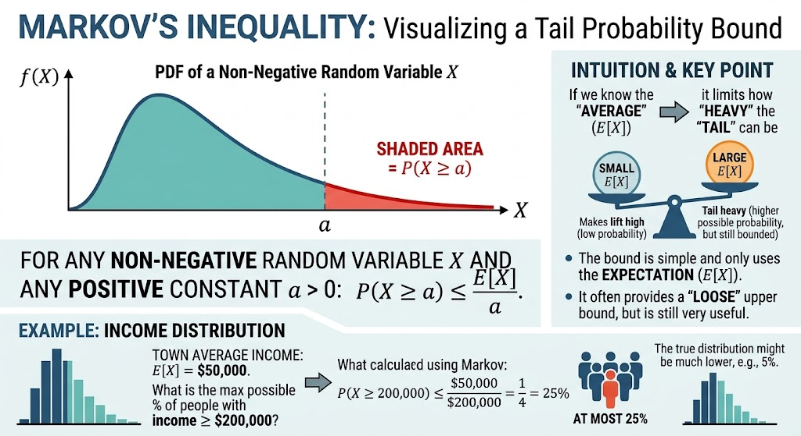

馬爾科夫不等式：基於期望值的非負隨機變數機率上限

在上一篇集中不等式：從極限定理到集中不等式工具箱的導論中，我們提到在分析隨機演算法的效度時，我們時常需要評估「演算法在最壞情況下，執行時間或資源消耗超出容忍上限的機率」。為了繞過複雜的機率密度函數積分，我們引入了「代數放縮」的概念。

而在這龐大的集中不等式工具箱中，最基礎、前置條件最簡約的開路先鋒，就是馬爾科夫不等式（Markov's Inequality）。
馬爾科夫不等式是量化集中現象最基礎的機率不等式。它只需要知道隨機變數的一階動差（即期望值），且前提為變數必須為非負（Non-negative），就能為我們給出一個安全且保守的尾端機率上界。這意味著我們甚至不需要知道隨機變數的真實機率分佈為何，這也是為什麼它是一項極為實用且廣泛普及的工具。
數學定理與形式
馬爾科夫不等式定理： 設 $X$ 為一個定義在樣本空間上的可積隨機變數，且 $X$ 為非負隨機變數（$X \ge 0$）。則對任意嚴格大於零的實數常數 $a > 0$，恆滿足以下不等式：
$$\operatorname{Pr}[X \ge a] \le \frac{\mathbb{E}[X]}{a}$$
這個不等式是一個非常優雅且直觀的結論，其白話文意即：一個非負隨機變數的值，超過任意正數 $a$ 的機率，永遠不可能大於「期望值除以 $a$」。
邊界放寬：什麼是「幾乎必然非負」？
在定理中，「非負」的前提在數學上可以進一步放寬為「幾乎必然非負（Almost Surely Non-negative, $X \ge 0 \text{ a.s.}$）」：
- 嚴格非負：要求樣本空間中絕對不存在任何負數數值。
- 幾乎必然非負：允許樣本空間中存在取值為負數的例外個體，但要求所有負數例外發生的總機率必須嚴格為零（即 $\operatorname{Pr}[X < 0] = 0$，等價於 $\operatorname{Pr}[X \ge 0] = 1$）。
為何不等式依然成立？ 在機率論與測度論中，機率為零的例外事件在計算期望值（積分/加總）時對總量的貢獻精確為 $0$（屬於「零測集 Null set」）。因此就算理論上存在負數例外，只要其發生機率為 0，就不會破壞代數放縮過程，馬爾科夫不等式依然完全成立。
數學證明：指示函數的巧妙應用
強烈建議親自閱讀並理解馬爾科夫不等式的證明，因為這是機率論中「期望值基本性質」非常有趣且經典的應用。為了給出一個不論連續或離散皆適用的通用證明，我們引入指示函數（Indicator Function） $I$。
首先，隨機變數 $X$ 可以根據門檻 $a$ 被拆分為兩部分： $$X = X \cdot I_{\{X < a\}} + X \cdot I_{\{X \ge a\}}$$
由於前提 $X$ 是一個非負隨機變數，且指示函數的結果非 0 即 1，因此第一項 $X \cdot I_{\{X < a\}}$ 必然大於等於零。如果我們直接將其捨棄，會得到一個必然成立的不等式： $$X \ge X \cdot I_{\{X \ge a\}}$$
接著，觀察右邊的項 $X \cdot I_{\{X \ge a\}}$。當指示函數 $I_{\{X \ge a\}}$ 不為零（亦即等於 1）時，代表事件 $X \ge a$ 發生了。既然 $X \ge a$，我們可以將變數 $X$ 放縮為底限常數 $a$，這會讓數值進一步變小： $$X \cdot I_{\{X \ge a\}} \ge a \cdot I_{\{X \ge a\}}$$
將上述兩個放縮步驟結合，我們得出： $$X \ge a \cdot I_{\{X \ge a\}}$$
現在，我們對不等式兩邊同時取期望值。根據期望值的單調性（Monotonicity）與線性性質（Linearity），我們得到： $$\mathbb{E}[X] \ge \mathbb{E}[a \cdot I_{\{X \ge a\}}] = a \cdot \mathbb{E}[I_{\{X \ge a\}}]$$
在機率論中有一個極為基本且好用的性質：一個事件指示函數的期望值，就等於該事件發生的機率。 因此 $\mathbb{E}[I_{\{X \ge a\}}] = \operatorname{Pr}[X \ge a]$。代入後得到： $$\mathbb{E}[X] \ge a \cdot \operatorname{Pr}[X \ge a]$$
最後，由於 $a$ 是嚴格大於零的常數，我們將兩邊同除以 $a$，即得證馬爾科夫不等式： $$\operatorname{Pr}[X \ge a] \le \frac{\mathbb{E}[X]}{a}$$
直觀理解：隱藏在期望值背後的引力
從本質上來看，這個結論非常符合我們的直覺。
一個分佈的「期望值」，本就是由整個樣本空間的機率與其數值綜合推演而出的重心。因此，雖然我們不知道整體分佈的真實形貌，但可以肯定的是，絕大部分的數值都不可能無限制地偏離期望值太遠。
馬爾科夫不等式正是提供了這樣一個嚴格的推導，宣告極端大值出現的機率最多不會超過多少。道理很簡單：如果那些極端數值出現的機率真的超過了這個界限，那麼這些極大值所貢獻的權重，打從一開始就會把期望值往上拉高，使得這組資料的期望值根本不可能是我們目前所看到的數字。
倍數參數化形式 (Parameterized Form)
如果我們將門檻 $a$ 表示為期望值的 $\alpha$ 倍（即令 $a = \alpha \cdot \mathbb{E}[X]$，其中 $\alpha > 1$），這個不等式可以改寫成一個在工程與分析上極為直觀的「倍數形式」：
$$\operatorname{Pr}[X \ge \alpha \mathbb{E}[X]] \le \frac{1}{\alpha}$$
這段數學式的白話文強而有力：一個非負隨機變數的數值，超過其平均值 $\alpha$ 倍的機率，絕對不可能大於 $1/\alpha$。例如，數值超過平均值 10 倍的機率，絕對不可能超過 $\frac{1}{10} = 10\%$。
倍數形式的兩大經典範例：生活直覺與演算法分析
馬爾科夫不等式的「倍數形式」在日常生活與演算法工程中皆有著極為強大的實用價值：
案例一：國民所得分佈（日常生活直覺）
想像一下，假設我們從某個國家中隨機抽取一名國民，已知該國的平均年所得為 4 萬美元。請問：這名被抽中者的年所得「大於 20 萬美元」的機率有多高？
在完全不知道該國所得分佈曲線的情況下，因為所得必定非負，且 20 萬為平均 4 萬的 5 倍（$\alpha = 5$），我們直接套用馬爾科夫不等式：
- 期望值 $\mathbb{E}[X] = 40,000$
- 門檻 $a = 200,000 = 5 \cdot \mathbb{E}[X]$
$$\operatorname{Pr}[X \ge 200,000] \le \frac{40,000}{200,000} = \frac{1}{5} = 20\%$$
即使缺乏任何其他分佈資訊，我們依然能得出一個強而有力的數學保證：該國年收入超過 20 萬美元的極端高薪人口，最多不會超過總人口的 20%。這呼應了前面的直覺——如果超過 20%，這些人的收入總和就會把整體的平均值拉抬到超過 4 萬美元，與已知前提產生矛盾。
案例二：Las Vegas 演算法（隨機演算法 Worst-Case 時間保障）
在隨機演算法分析中，馬爾科夫不等式是為執行時間建立保底界限的利器。
假設我們設計了一個 Las Vegas 演算法，經過初步理論分析，得知其期望運行時間為 $T$ 秒。由於時間必定是非負實數 ($T \ge 0$)，若將系統容忍的超時上限設定為平均時間的 10 倍（$\alpha = 10$）：
$$\operatorname{Pr}[\text{運行時間} \ge 10T] \le \frac{1}{10} = 10\% \implies \operatorname{Pr}[\text{運行時間} < 10T] \ge 1 - 0.1 = 90\%$$
工程意義：即便我們完全不知道該演算法在面對極端測資時，其運行時間的具體機率分佈長什麼樣子，我們也能在數學上做擔保——該演算法在 $10T$ 秒內順利結束運行的機率，至少高達 $90\%$。
進階應用與侷限性
馬爾科夫不等式在機率與統計學中有著舉足輕重的地位，它不僅能直接用來推導尾端機率上界，更是諸多進階定理的核心基石。例如：
- 推導柴比雪夫不等式 (Chebyshev's Inequality)：將隨機變數 $X$ 替換為 $(X - \mu)^2$。
- 推導切爾諾夫界限 (Chernoff Bound)：將隨機變數替換為指數形式 $e^{tX}$，即可利用動差生成函數（MGF）推導出具備指數級衰減的機率邊界。
- 收斂性證明：在高等機率論中，它常被用來證明「均方收斂（Mean Square Convergence）」必然推導出「依機率收斂（Convergence in Probability）」。

侷限性： 雖然馬爾科夫不等式極為通用，但它給出的界限通常不夠緊緻（Loose Bound）。其衰減速率僅為多項式級別的 $\mathcal{O}(1/a)$。如果我們知道該隨機變數是由多個獨立事件重複組合而成，經驗告訴我們極端值出現的機率應該呈「指數級」衰減。馬爾科夫不等式之所以無法給出這麼好的界限，是因為它完全沒有利用到變異數（Variance）或更高階動差（Higher Moments）的資訊。而後續將介紹的柴比雪夫不等式，正是在此基礎之上，引入了變異數資訊來大幅改進馬爾科夫不等式的不足。
Review Kit
QA Generator Prompt
You are given a set of notes or an article.
Read and understand the content, then generate approximately 20 questions.
Requested question type(s): ["mcq"]
Most questions should be drawn directly from the material, focusing on key concepts, definitions,
and core ideas, while a smaller portion can be creative or application-based,
extending the material into real-world or novel scenarios but staying conceptually grounded.
Include a mix of difficulty levels—beginner, intermediate, advanced, and professional.
For each question, provide the question number, type (conceptual, application, analytical),
difficulty, topic, the correct answer, and a brief explanation.
If the requested question format requires options (for example MCQ), include the necessary answer choices.
Focus on clarity, relevance, and meaningful application, avoiding trivial or overly obscure details.You are given a set of notes or an article.
Read and understand the content, then generate approximately 20 questions.
Requested question type(s): ["mcq"]
Most questions should be drawn directly from the material, focusing on key concepts, definitions,
and core ideas, while a smaller portion can be creative or application-based,
extending the material into real-world or novel scenarios but staying conceptually grounded.
Include a mix of difficulty levels—beginner, intermediate, advanced, and professional.
For each question, provide the question number, type (conceptual, application, analytical),
difficulty, topic, the correct answer, and a brief explanation.
If the requested question format requires options (for example MCQ), include the necessary answer choices.
Focus on clarity, relevance, and meaningful application, avoiding trivial or overly obscure details.參考資料（References）
- NUS CS5234 Algorithms at Scale Course Materials
- Taboga, Marco (2021). "Markov's inequality", Lectures on probability theory and mathematical statistics. Kindle Direct Publishing. Online appendix. https://www.statlect.com/fundamentals-of-probability/Markov-inequality